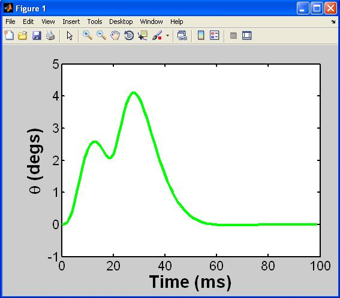
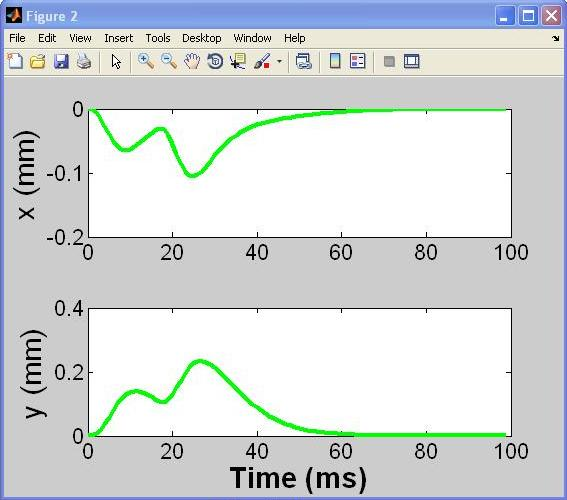

This is the readme for the matlab files associated with the paper:
Simony, E., Bagdasarian K, Herfst L., Brecht M., Ahissar E, Golomb D.
Temporal and spatial characteristics of vibrissa responses to motor
commands (2010). J. Neurosci. 30, 8935-8952.
Written by Erez Simony, June 2010.
This program simulates the transformation from motoneuron spikes to
whisking rotation angle(theta) and to center of mass translations, x
and y. If you are using this code, please cite the above the paper.
Simulation files:
test_motor_plant.m : run this file in order to simulate the plant. the
parameters set (small or large) should be enable
in the code.
motor_plant_parameters_small_angles.m : parameters set for small whisker angles
motor_plant_parameters_large_angles.m : parameters set for large whisker angles
motor_plant.m : intialize all data structures
motor_plant_ode.m : ODE file
Output1: currently it reproduces Fig 4B (model)


for 2 spikes with ISI:17msec (together with x and y ) make sure that
"motor_plant_parameters_small_angles" in "test_motor_plant.m" is
enabled (uncommented at the front of the script; this is default)
Output2: it reproduces Fig 5C (model), for 3 spikes with ISI:15msec
(together with x and y ) make sure that
"motor_plant_parameters_large_angles" in "test_motor_plant.m" is
enabled.